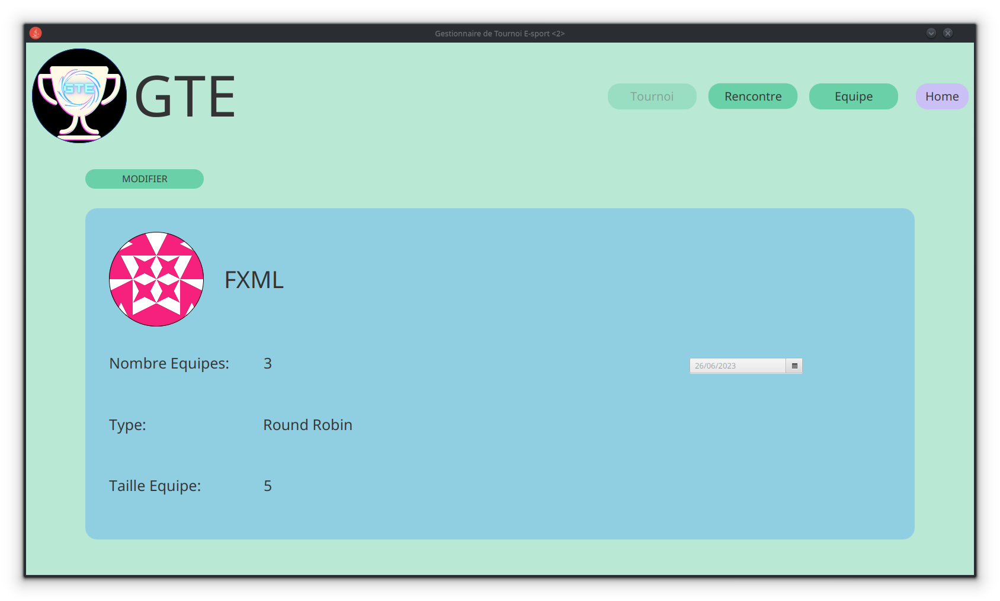
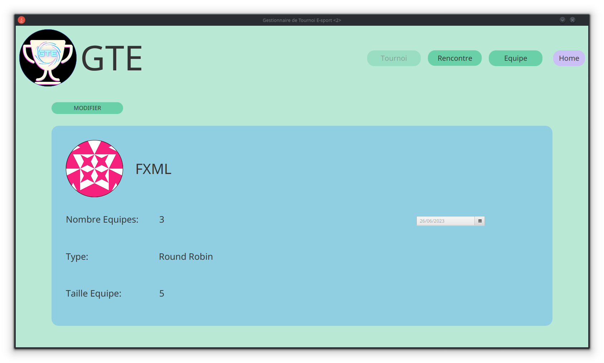
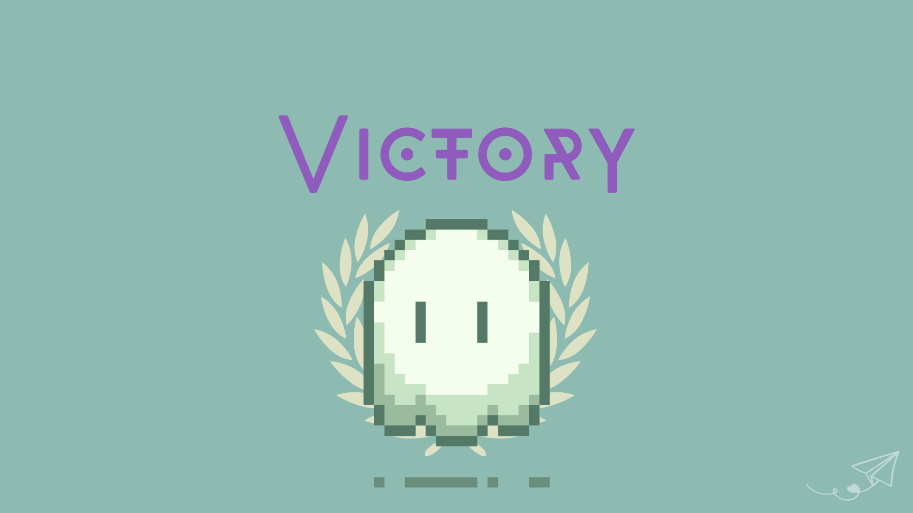
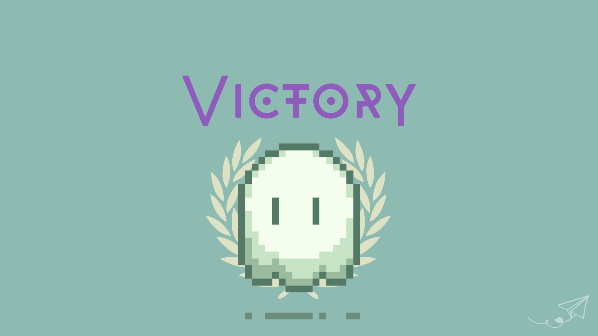

SAE 1.05/6
Création d'un site web, étude des besoins et contexte.
Projet (.zip)Aucun projet ne correspond à votre recherche.
Création d'un site web, étude des besoins et contexte.
Projet (.zip)
Installation d'un poste de travail Debian 11 sur une machine virtuelle.
Projet (.zip)

Analyse et traitement d'une base de donnée des nauvragés du Titanic.
Projet (.zip)


Méthode d'apprentissage automatique pour classer des dépêches.
PDF

Graphiques en R et analyses sur les accidents de voitures en France.
PDF 


Application lourde en Java de gestion de tournoi avec une interface en JavaFx.
Projet (.zip)


Développement d'un jeu d'aventure en Python.
Projet (.zip)


Page web affichant les photos des robots sur Mars
Projet (.zip)

Application Android et site web (serveur) pour la gestion de stage.
 

Développement d'un jeu de tir multijoueur en Python.
Projet (.zip)


Gestionnaire de héros en Angular et Firebase
Projet (.zip)

Les pipelines avec Gitlab CI
Projet (.zip)


Développement d'une API à partir d'un fichier JSON.
Projet (.zip)
Création d'un jeu du démineur en application web.
Projet (.zip)Mes projets personnels sont en cours de développement. N'hésitez pas à revenir pour voir les nouveautés. Vos idées et suggestions sont toujours les bienvenues !
Restez à l'affût de cette section pour découvrir les dernières mises à jour et surprises !